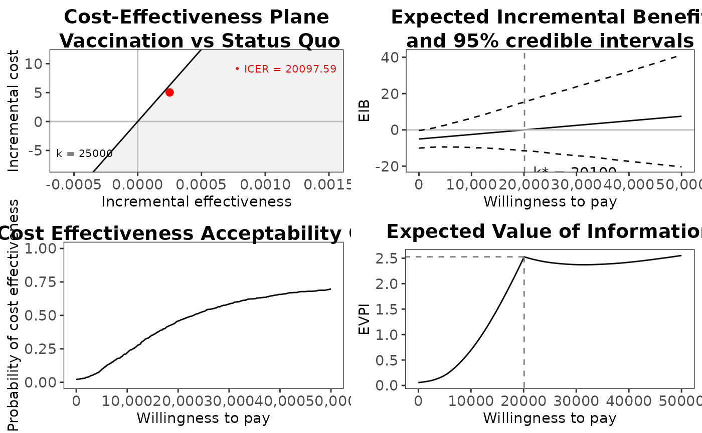
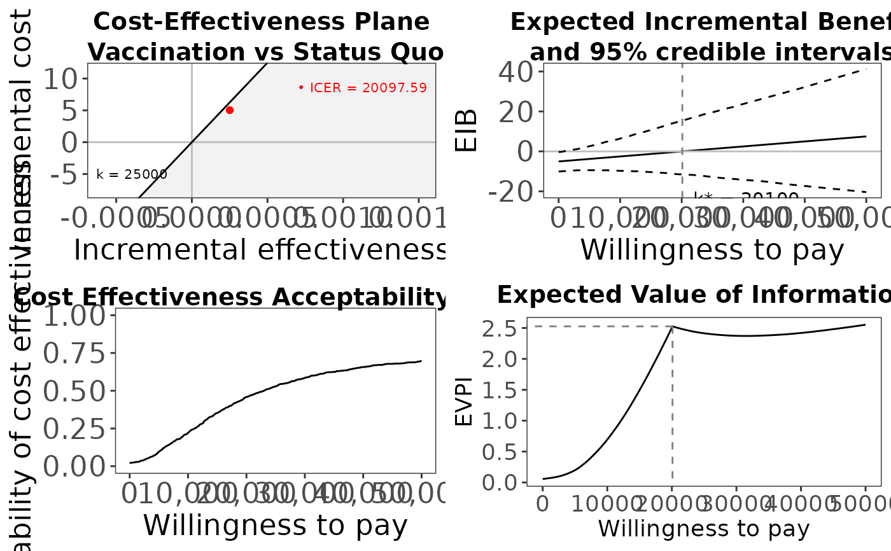
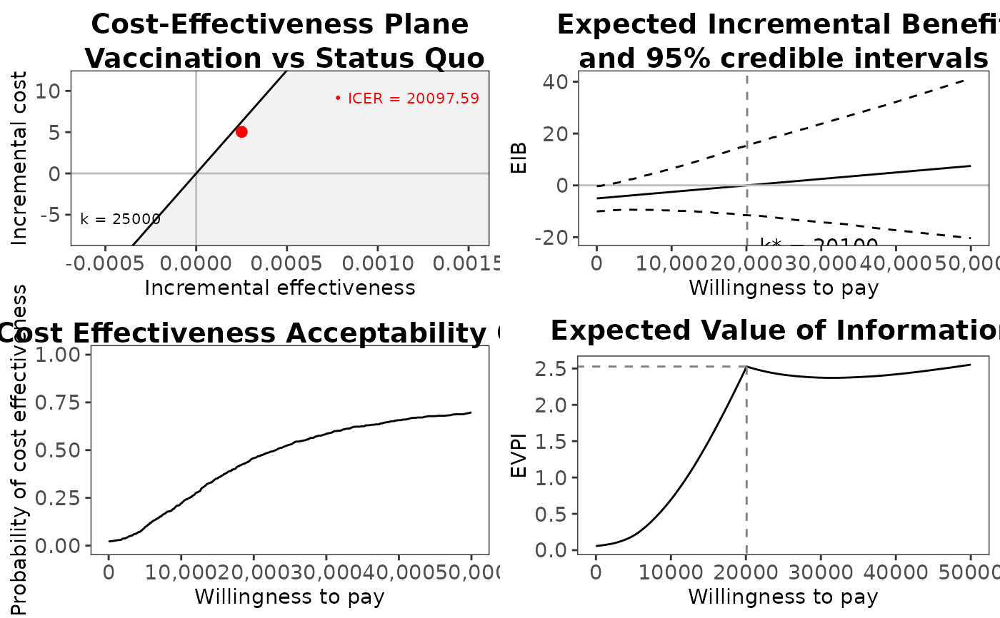
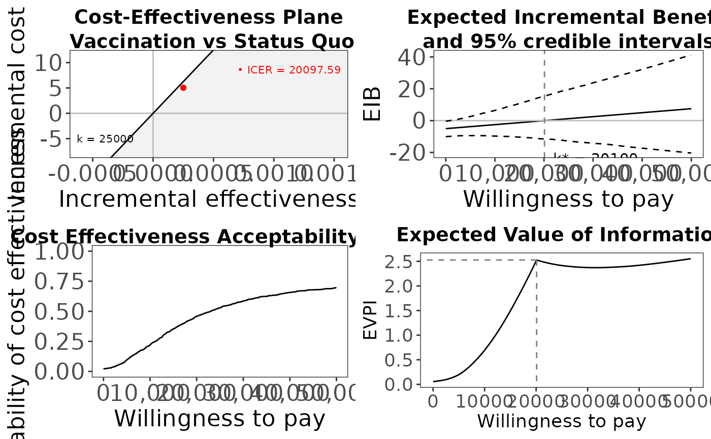

Plots in a single graph the Cost-Effectiveness plane, the Expected Incremental Benefit, the CEAC and the EVPI.
Arguments
- x
A
bceaobject containing the results of the Bayesian modelling and the economic evaluation.- comparison
Selects the comparator, in case of more than two interventions being analysed. Default as NULL plots all the comparisons together. Any subset of the possible comparisons can be selected (e.g.,
comparison=c(1,3)orcomparison=2).- wtp
The value of the willingness to pay parameter. It is passed to
ceplane.plot().- pos
Parameter to set the position of the legend (only relevant for multiple interventions, ie more than 2 interventions being compared). Can be given in form of a string
(bottom|top)(right|left)for base graphics andbottom|top|left|rightfor ggplot2. It can be a two-elements vector, which specifies the relative position on the x and y axis respectively, or alternatively it can be in form of a logical variable, withFALSEindicating to use the default position andTRUEto place it on the bottom of the plot.- graph
A string used to select the graphical engine to use for plotting. Should (partial-)match the options
"base","ggplot2"or"plotly". Default value is"base".- ...
Arguments to be passed to the methods
ceplane.plot()andeib.plot(). Please see the manual pages for the individual functions. Arguments likesize,ICER.sizeandplot.crican be supplied to the functions in this way. In addition ifgraph="ggplot2"and the arguments are named theme objects they will be added to each plot.
Details
The default position of the legend for the cost-effectiveness plane
(produced by ceplane.plot()) is set to c(1, 1.025)
overriding its default for pos=FALSE, since multiple ggplot2 plots
are rendered in a slightly different way than single plots.
References
Baio G, Dawid aP (2011). “Probabilistic sensitivity analysis in health economics.” Stat. Methods Med. Res., 1–20. ISSN 1477-0334, doi:10.1177/0962280211419832 , https://pubmed.ncbi.nlm.nih.gov/21930515/.
Baio G (2013). Bayesian Methods in Health Economics. CRC.
Examples
# See Baio G., Dawid A.P. (2011) for a detailed description of the
# Bayesian model and economic problem
# Load the processed results of the MCMC simulation model
data(Vaccine)
# Runs the health economic evaluation using BCEA
he <- bcea(
e=eff, c=cost, # defines the variables of
# effectiveness and cost
ref=2, # selects the 2nd row of (e,c)
# as containing the reference intervention
interventions=treats, # defines the labels to be associated
# with each intervention
Kmax=50000, # maximum value possible for the willingness
# to pay threshold; implies that k is chosen
# in a grid from the interval (0,Kmax)
plot=FALSE # does not produce graphical outputs
)
# Plots the summary plots for the "bcea" object m using base graphics
plot(he, graph = "base")
 # Plots the same summary plots using ggplot2
if(require(ggplot2)){
plot(he, graph = "ggplot2")
# Example of a customized plot.bcea with ggplot2
plot(he,
graph = "ggplot2", # use ggplot2
ICER_size = 1.5, # extra options modifies the mean point size
text = list(size=rel(1.25)) # modifies the text size
)
}
#> Warning: Removed 1000 rows containing missing values or values outside the scale range
#> (`geom_point()`).

#> Warning: Removed 1000 rows containing missing values or values outside the scale range
#> (`geom_point()`).

# Plots the same summary plots using ggplot2
if(require(ggplot2)){
plot(he, graph = "ggplot2")
# Example of a customized plot.bcea with ggplot2
plot(he,
graph = "ggplot2", # use ggplot2
ICER_size = 1.5, # extra options modifies the mean point size
text = list(size=rel(1.25)) # modifies the text size
)
}
#> Warning: Removed 1000 rows containing missing values or values outside the scale range
#> (`geom_point()`).

#> Warning: Removed 1000 rows containing missing values or values outside the scale range
#> (`geom_point()`).
